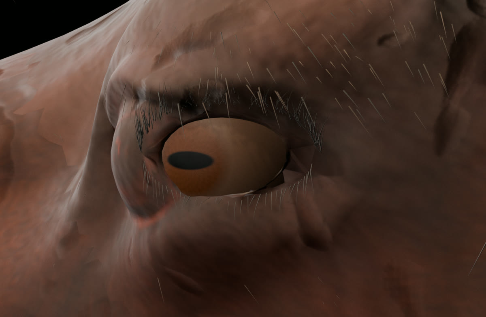
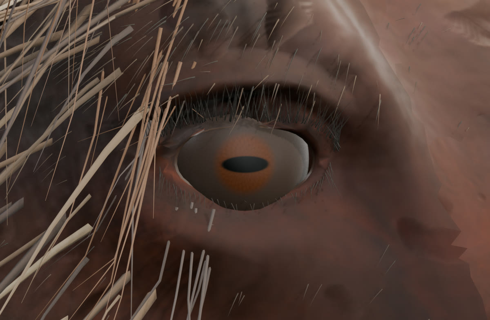
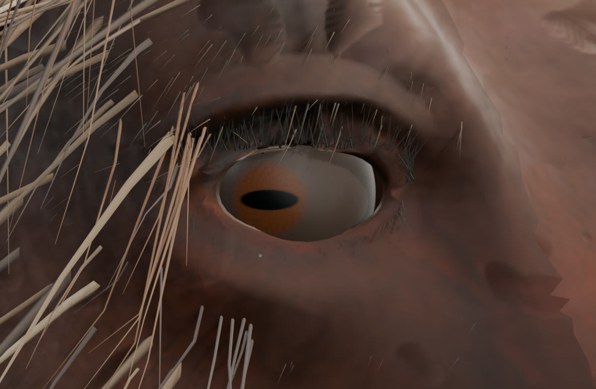
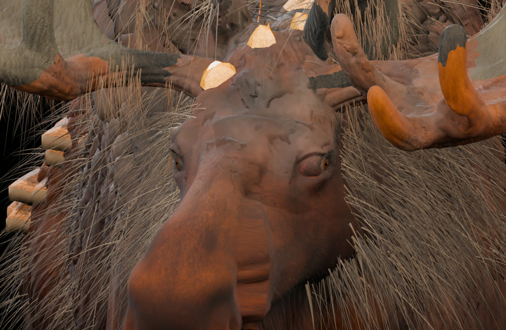
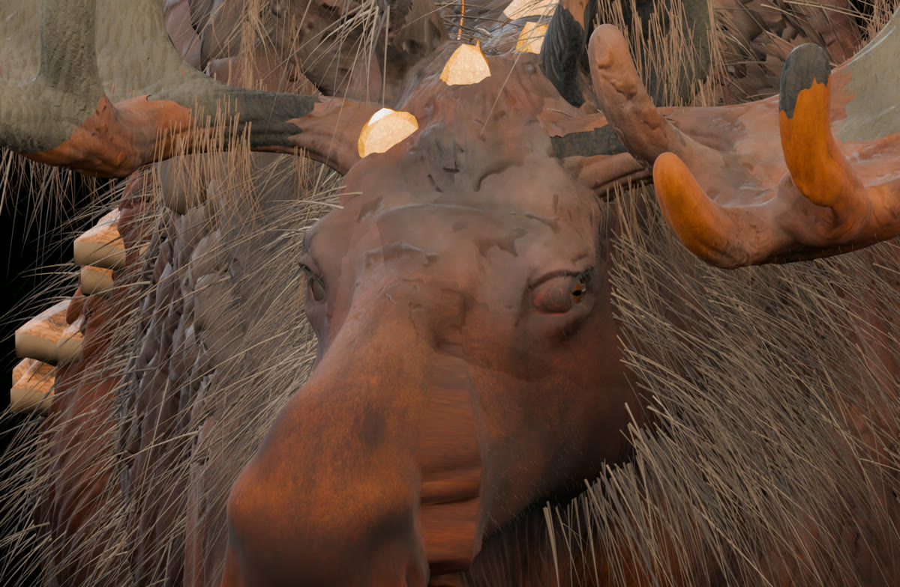

Лось V32L: левый глаз и правая глазница
Это редактируемая игровая 3D-модель, не сгенерированное изображение. Правый глаз сдвинут к морде на 15 мм по локальной оси Y одновременно с деформацией кожи правой глазницы — смещено 785 вершин, с мягким переходом в окружающую геометрию. Левый глаз: сглажено верхнее веко, уменьшена видимая радужка, затемнена периферия и локально убраны пересекающие глаз пряди.
ЛЕВЫЙ ГЛАЗПРАВЫЙ ГЛАЗ
Кадры видео получены из Blender после всех исправлений. В модели самостоятельный клип 60 кадров / 24 FPS, превью 40 кадров / 8 FPS.
Правая сторонаГлаз + глазница вперёд вместе; сдвиг −0,015 м вдоль локальной оси Y
Левая сторонаСглажены 186 вершин вокруг века; убраны 25 из 12 600 пересекающих глаз прядей
АнимацияОдин Action для двух глаз, проверены все 60 кадров; старые два клипа сохранены
Глаза крупным планом
Открой любой кадр для увеличения; ракурсы показывают именно геометрию после изменений V32L.




Морда спереди

